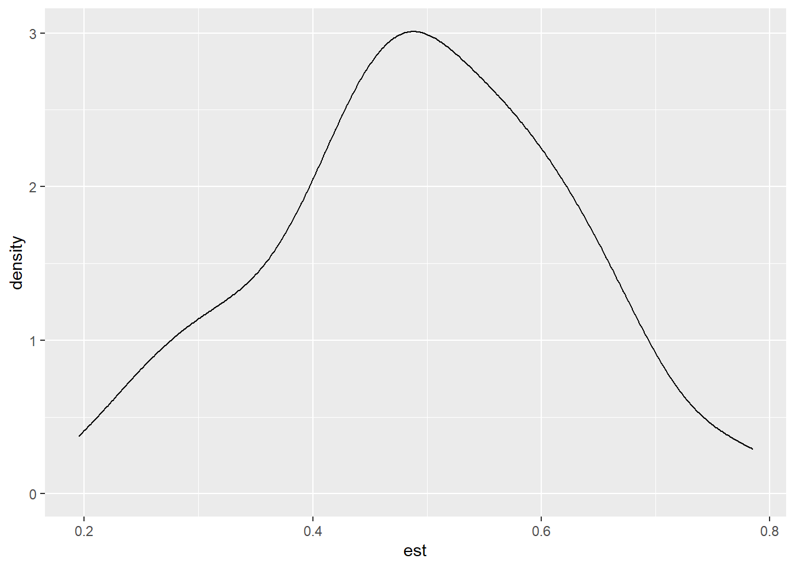
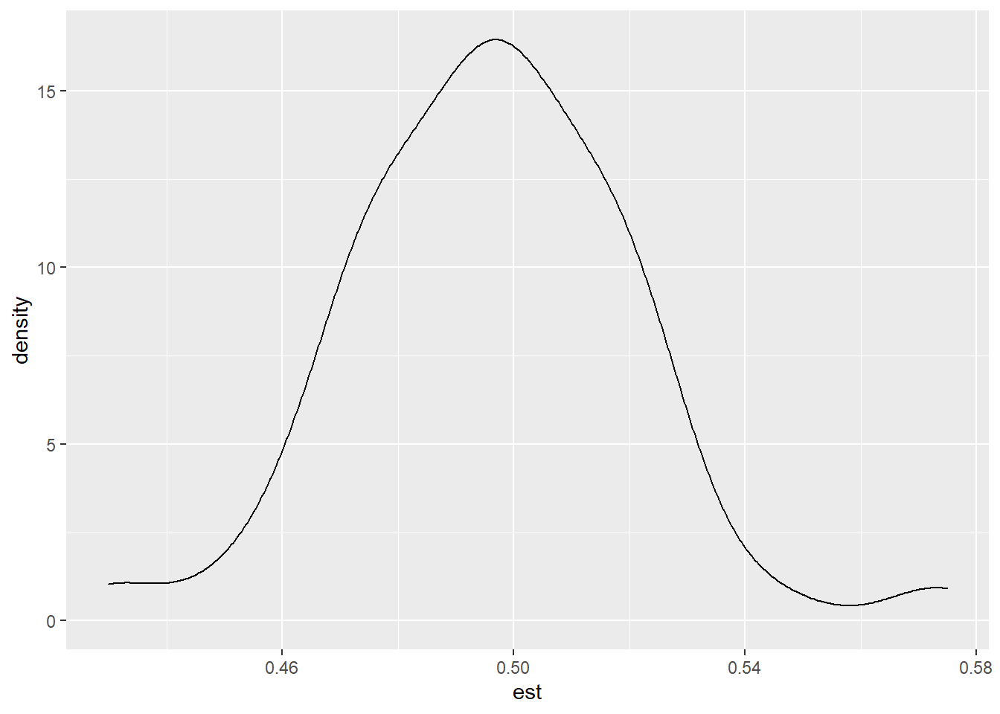

library(lme4)## Warning: package 'lme4' was built under R version 4.1.3## Loading required package: Matrixlibrary(texreg)## Version: 1.37.5
## Date: 2020-06-17
## Author: Philip Leifeld (University of Essex)
##
## Consider submitting praise using the praise or praise_interactive functions.
## Please cite the JSS article in your publications -- see citation("texreg").Connected to Portfolio7 (disregard numeric order) I aim to be familiar with multilevel simulation in this project.
However, I could not understand every function or every concept that used in here (i.e., kernal density, the list things, and .x…). However, I tried to get big picture
Reference 2: https://personality-project.org/r/html/sim.multilevel.html
Reference 3: https://bookdown.org/marklhc/notes/simulating-multilevel-data.html#linear-growth-model
4: https://aosmith.rbind.io/2018/04/23/simulate-simulate-part-2/
5:https://journals.sagepub.com/doi/full/10.1177/2515245920965119
6:https://cran.r-project.org/web/packages/simglm/vignettes/tidy_simulation.html
We well generate the data as follows:
\[Level1: Y_{ij} = \beta_{0j} + \beta_{1j}x_{ij} + r_{ij}\]
\(x_{ij}\) is level-1 predictor
\[r_{ij} \sim N(0,\sigma^2)\] Level 2:
\[\beta_{0j} = \gamma_{00} + \gamma_{01}z_{j} + u_{0j} \]
\[\beta_{1j} = \gamma_{10}\]
\(z_{j}\) is level-2 predictor (AGE)
\[u_{0j} \sim N(0,\tau_0^2)\]
Combined together:
\[Y_{ij} = \gamma_{00} + \gamma_{01}z_{j} + u_{0j} + \gamma_{10}x_{ij} + r_{ij}\]
Sample size:
I will cet the number of clusters to be 100, and group size to be 20
# sample size
N<-100 # number of group
nj<- 20 # cluster/group size
# fixed effect parameter
gamma00<- 5
gamma01<- 2
gamma10<- 3
# set the variance of random coeffiencts
tau2<-2
sigma2<-4R.intercept<-matrix(,nrow=N*nj,ncol=7)
head(R.intercept,10)## [,1] [,2] [,3] [,4] [,5] [,6] [,7]
## [1,] NA NA NA NA NA NA NA
## [2,] NA NA NA NA NA NA NA
## [3,] NA NA NA NA NA NA NA
## [4,] NA NA NA NA NA NA NA
## [5,] NA NA NA NA NA NA NA
## [6,] NA NA NA NA NA NA NA
## [7,] NA NA NA NA NA NA NA
## [8,] NA NA NA NA NA NA NA
## [9,] NA NA NA NA NA NA NA
## [10,] NA NA NA NA NA NA NAindex<-1 # do not understand why doing this. sampling Macro (e.g., school rather than student)and micro (student rather than school)
#outer loop
for(macro in (1:N)){
u0j=sqrt(tau2)*rnorm(1)
age=50*runif(1)+20 #age range between 30-70
#iner loop
for(micro in (1:nj)){
xij=rnorm(1) #create level-1 predictor
z=rnorm(1) # create level-1 residual with sigma2=2
rij=sqrt(sigma2)*z;
# DV
yij=gamma00+gamma01*xij+gamma01*age+u0j+rij
R.intercept[index,1:7] <-c(macro,micro,yij,age,xij,u0j,rij)
index <- index+1
}
}
R.intercept<-as.data.frame(R.intercept)
names(R.intercept)<-c("macro","micro","yij","age","xij","u0j","rij")
head(R.intercept,10)## macro micro yij age xij u0j rij
## 1 1 1 80.75133 36.43608 0.9059396 1.042548 0.02473387
## 2 1 2 72.16898 36.43608 -2.2459621 1.042548 -2.25381286
## 3 1 3 77.92637 36.43608 -0.8210075 1.042548 0.65367061
## 4 1 4 78.22007 36.43608 -0.5475850 1.042548 0.40052349
## 5 1 5 78.39262 36.43608 -0.5716353 1.042548 0.62117432
## 6 1 6 81.81471 36.43608 0.4623969 1.042548 1.97520893
## 7 1 7 78.63474 36.43608 0.2420477 1.042548 -0.76406804
## 8 1 8 75.41226 36.43608 -0.1509172 1.042548 -3.20061546
## 9 1 9 80.68897 36.43608 0.1210793 1.042548 1.53210005
## 10 1 10 80.13586 36.43608 0.8793816 1.042548 -0.53761219model1<-lmer(yij~xij+age+(1|macro),data=R.intercept,REML=FALSE)
summary(model1)## Linear mixed model fit by maximum likelihood ['lmerMod']
## Formula: yij ~ xij + age + (1 | macro)
## Data: R.intercept
##
## AIC BIC logLik deviance df.resid
## 8762.1 8790.1 -4376.1 8752.1 1995
##
## Scaled residuals:
## Min 1Q Median 3Q Max
## -3.3107 -0.6504 -0.0292 0.6527 3.8561
##
## Random effects:
## Groups Name Variance Std.Dev.
## macro (Intercept) 1.957 1.399
## Residual 4.141 2.035
## Number of obs: 2000, groups: macro, 100
##
## Fixed effects:
## Estimate Std. Error t value
## (Intercept) 4.39198 0.49209 8.925
## xij 1.92691 0.04639 41.533
## age 2.01400 0.01021 197.236
##
## Correlation of Fixed Effects:
## (Intr) xij
## xij 0.016
## age -0.954 -0.013In the tutorial.. the model equation is not specified.. :(….
it is my guess, but I guess the model is..
\[Y_{ij}=\beta_{0j}+x_{ij}\beta_{1j}+e_{ij}\] \[\beta_{0j}=\gamma_{0}+u_{0j}\]
\[\beta_{1j}=\gamma_{1}+u_{1j}\] \[e_{ij} \sim N(0,\sigma^2)\]
\[\left[\begin{matrix}u_{0j}\\u_{1j}\\\end{matrix}\right]\sim MVN\left(\left[\begin{matrix}0\\0\\\end{matrix}\right],\left[\begin{matrix}\tau_{00}&\tau_{01}\\\tau_{10}&\tau_{11}\\\end{matrix}\right]\right)\]
library(tidyverse)
library(mnormt)
library(lme4)set.seed(2208)
#sample size
cn <-20 # cluster number
cs <-4 # cluster size
#fixed effect
gam <-c(0,0.5) # fix-effect, gamma 0 and gamma1
#random effect
G<-matrix(c(0.25,0,
0, 0.125), nrow=2) # tau00, tau01, tau10, tau11
sigma2 <-1 # within-person variance (1 level, sigma^2)seq_len(cs)## [1] 1 2 3 4xp<-cbind(1,seq_len(cs) -1) # why -1?
x <- xp[rep(seq_len(cs), cn), ]cn_id<-seq_len(cn)
pid<-rep(cn_id, each=cs)
print(pid)## [1] 1 1 1 1 2 2 2 2 3 3 3 3 4 4 4 4 5 5 5 5 6 6 6 6 7
## [26] 7 7 7 8 8 8 8 9 9 9 9 10 10 10 10 11 11 11 11 12 12 12 12 13 13
## [51] 13 13 14 14 14 14 15 15 15 15 16 16 16 16 17 17 17 17 18 18 18 18 19 19 19
## [76] 19 20 20 20 20uj<-rmnorm(cn,mean=rep(0,2), varcov=G)
eij<-rnorm(cn*cs,sd=sqrt(sigma2))## compute beta
betaj<-matrix(gam,nrow=cn,ncol=2,byrow=T)+uj
## Compute DV
y<-rowSums(x*betaj[pid,])+eij
## combine that into dataframe
sim_dat1<-tibble(y,time = x[,2],pid)gen_data_sim <- function( cn, cs, gam, G, sigma2=1){
xp<-cbind(1,seq_len(cs) -1) # why -1?
x <- xp[rep(seq_len(cs), cn), ]
# id generation
cn_id<-seq_len(cn)
pid<-rep(cn_id, each=cs)
# random componets
uj<-rmnorm(cn,mean=rep(0,2), varcov=G)
eij<-rnorm(cn*cs,sd=sqrt(sigma2))
## compute beta
betaj<-matrix(gam,nrow=cn,ncol=2,byrow=T)+uj
## Compute DV
y<-rowSums(x*betaj[pid,])+eij
## combine that into dataframe
sim_dat1<-tibble(y,time = x[,2],pid)
## return data
return(sim_dat1)
}gam <-c(0,0.5)
G<-matrix(c(0.25,0,
0, 0.01), nrow=2) # tau00, tau01, tau10, tau11
sigma2 <-1 # within-person variance (1 level, sigma^2)
sim_data2<-gen_data_sim(20,4,gam,G)
sim_big_sample<-gen_data_sim(200,50,gam,G) # generting sample that has larger samples run<-function(df){
lmer(y~time + (1|pid), data=df)
}run(sim_dat1)## Linear mixed model fit by REML ['lmerMod']
## Formula: y ~ time + (1 | pid)
## Data: df
## REML criterion at convergence: 255.329
## Random effects:
## Groups Name Std.Dev.
## pid (Intercept) 0.7554
## Residual 1.0187
## Number of obs: 80, groups: pid, 20
## Fixed Effects:
## (Intercept) time
## 0.01368 0.46195run(sim_data2)## Linear mixed model fit by REML ['lmerMod']
## Formula: y ~ time + (1 | pid)
## Data: df
## REML criterion at convergence: 236.2337
## Random effects:
## Groups Name Std.Dev.
## pid (Intercept) 0.6968
## Residual 0.8937
## Number of obs: 80, groups: pid, 20
## Fixed Effects:
## (Intercept) time
## 0.1598 0.3392run(sim_big_sample)## Linear mixed model fit by REML ['lmerMod']
## Formula: y ~ time + (1 | pid)
## Data: df
## REML criterion at convergence: 40423.59
## Random effects:
## Groups Name Std.Dev.
## pid (Intercept) 2.398
## Residual 1.744
## Number of obs: 10000, groups: pid, 200
## Fixed Effects:
## (Intercept) time
## -0.04115 0.49401set.seed(2208)
Nrep<-100 # number of replication
cn <-20 # cluster number
cs <-4 # cluster size
#fixed effect
gam <-c(0,0.5) # fix-effect, gamma 0 and gamma1
#random effect
G<-matrix(c(0.25,0,
0, 0.125), nrow=2) # tau00, tau01, tau10, tau11
sim_result<-vector("list", length=Nrep)for (i in seq_len(Nrep)){
sim_dat <- gen_data_sim(cn,cs,gam,G)
sim_result[[i]] <- run(sim_dat)
}
#check
sim_result[[Nrep]]## Linear mixed model fit by REML ['lmerMod']
## Formula: y ~ time + (1 | pid)
## Data: df
## REML criterion at convergence: 264.3811
## Random effects:
## Groups Name Std.Dev.
## pid (Intercept) 0.6601
## Residual 1.1184
## Number of obs: 80, groups: pid, 20
## Fixed Effects:
## (Intercept) time
## -0.2072 0.6748# extract fixed effect
fixef(sim_result[[1]])## (Intercept) time
## 0.01367995 0.46194936# standared error
sqrt(diag(vcov(sim_result[[1]])))## [1] 0.2546643 0.1018698# confidence interval
confint(sim_result[[1]], parm="time")## 2.5 % 97.5 %
## time 0.2607471 0.6631516 fixefs_time <- map(sim_result,
~ tibble(est = fixef(.x)[2],
se = sqrt(diag(vcov(.x))[2]),
ci = confint(.x, parm = "time")) %>%
transmute(est, se, li = ci[1], ui = ci[2])) %>%
bind_rows()## YR did not learn bias yet
#bias
summarize(fixefs_time,
ave_est=mean(est),
ave_se = mean(se),
sd_est = sd(est),
ci_coverage = mean (li <=gam[2] & ui >= gam[2])) %>%
#compuate bias and SE bias
mutate(bias = ave_est - gam[2],
rbias= bias/gam[2],
se_bias = ave_se-sd_est,
rse_bias =se_bias/sd_est,
rmse=bias^2 + sd_est^2)## # A tibble: 1 x 9
## ave_est ave_se sd_est ci_coverage bias rbias se_bias rse_bias rmse
## <dbl> <dbl> <dbl> <dbl> <dbl> <dbl> <dbl> <dbl> <dbl>
## 1 0.492 0.110 0.129 0.86 -0.00826 -0.0165 -0.0191 -0.149 0.0166sample size influences on fixed effect in this model (not in the tutorial ) 20x4 sample size (80)
fixefs_time%>%
ggplot(aes(x=est))+
geom_density() 200x50 sample size
for (i in seq_len(Nrep)){
sim_big_sample<-gen_data_sim(200,50,gam,G)
sim_result[[i]] <- run(sim_big_sample)
}
# extract fixed effect
fixef(sim_result[[1]])## (Intercept) time
## 0.006753668 0.506845201# standared error
sqrt(diag(vcov(sim_result[[1]])))## [1] 0.62466806 0.00366569# confidence interval
confint(sim_result[[1]], parm="time")## 2.5 % 97.5 %
## time 0.4996602 0.5140302 fixefs_time <- map(sim_result,
~ tibble(est = fixef(.x)[2],
se = sqrt(diag(vcov(.x))[2]),
ci = confint(.x, parm = "time")) %>%
transmute(est, se, li = ci[1], ui = ci[2])) %>%
bind_rows()
summarize(fixefs_time,
ave_est=mean(est),
ave_se = mean(se),
sd_est = sd(est),
ci_coverage = mean (li <=gam[2] & ui >= gam[2])) %>%
#compuate bias and SE bias
mutate(bias = ave_est - gam[2],
rbias= bias/gam[2],
se_bias = ave_se-sd_est,
rse_bias =se_bias/sd_est,
rmse=bias^2 + sd_est^2)## # A tibble: 1 x 9
## ave_est ave_se sd_est ci_coverage bias rbias se_bias rse_bias rmse
## <dbl> <dbl> <dbl> <dbl> <dbl> <dbl> <dbl> <dbl> <dbl>
## 1 0.496 0.00362 0.0245 0.25 -0.00363 -0.00726 -0.0209 -0.852 0.000616fixefs_time%>%
ggplot(aes(x=est))+
geom_density()
As this simulation graph shows, large sample size makes graph more normal-like shape.